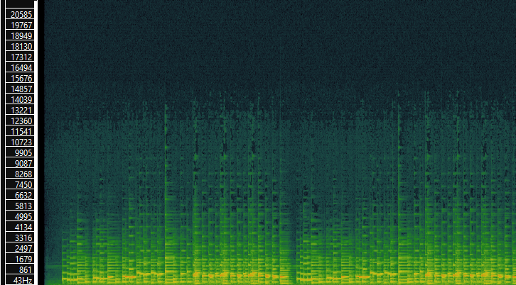
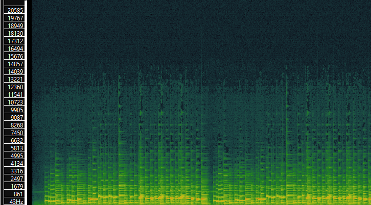

Week 9: Audio Feature Extraction and Visualization
This week, we analyze three Mozart pieces using Sonic Visualizer and Python. The features extracted include spectrograms, Mel Frequency Cepstral Coefficients (MFCC), and Chromagrams. These features are then visualized using histograms.
1. Spectrogram, MFCC, and Chromagram
Below are the generated visualizations for the selected Mozart pieces:
Spectrograms
 


MFCCs


Chromagram


2. Feature Histograms
The following histograms represent the distribution of features across the three pieces: